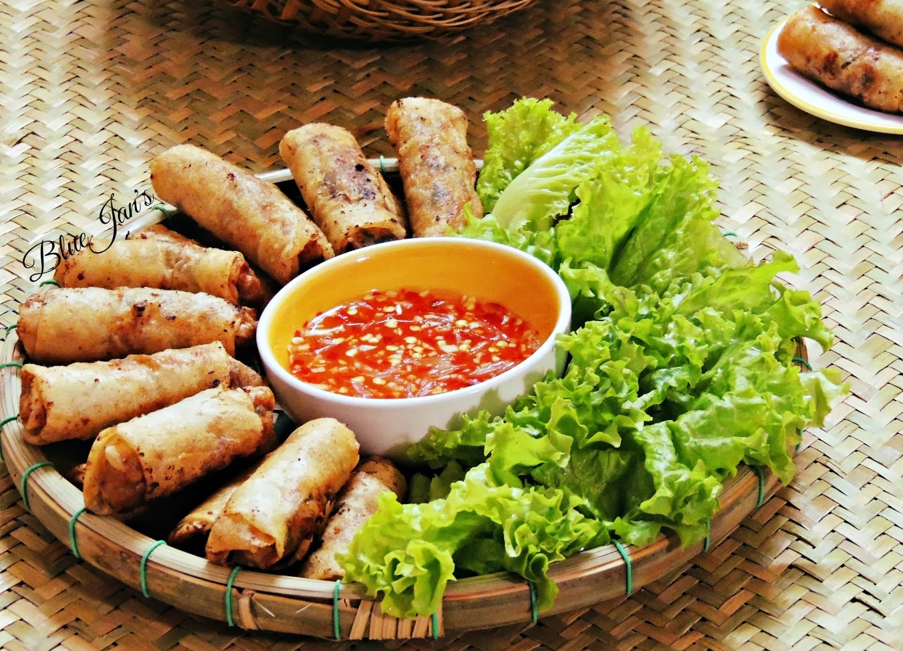

INGREDIENTS
200 g minced pork
200 g shrimp minced
100 g taro shredded
100 g carrot shredded
20 g dried woodear mushrooms soaked in hot water and julienned
50 g glass noodle soaked in water for 10 mins
1 tbsp shallot minced
1 tbsp garlic minced
1 egg
1 bean sprouts (7 oz) optional
1 block tofu optional
salt, pepper, sugar, chicken stock to taste
20 pcs rice paper wrapper
dipping fish sauce
INSTRUCTIONS
1. In a large bowl, combine the minced pork and minced shrimp together and season lightly with salt, pepper, sugar and chicken stock (1/2 tsp each). Also add 1 tbps minced shallot and 1 tbsp minced garlic. Mix well in a circular motion till combined.
2. Combine the seasoned meat and shrimp with all the shredded vegetables, mushrooms and glass noodle. Mix well. To help all the ingredients adhere better, add 1 egg or just the egg white. Mix well again and leave to sit for about 15 minutes.
3. To soften the rice paper for wrapping, moisten the rice paper with a damp cloth instead of soaking in water.
4. Scoop a heaping tablespoon of the filling and place near one end of the rice paper. Roll until you reach the center, then fold both sides inwards and continue to roll up till the other end.
5. Heat a generous amount of oil in the pan until you see small bubbles around the chopstick. Then keep the heat on medium and start frying. The rice paper could be sticky at first so leave some spaces between the rolls. After a few minutes, it's ok to bring them closer to one another. Deep fry until they turn golden brown.
6. Place them on paper towel to drain off the excess oil. Serve with dipping fish sauce, fresh vegetable and herbs.

⇒To get more instructions. Please watch the guide video behind